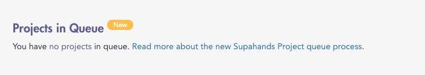

project queue is a new way of joining a project on
Workplace. Each SupaAgent who joins a project queue will
be assigned a tutorial slot.
Every project queue has an allocated number of tutorial slots. Once the queue is full, no more tutorial slots
will be assigned.
For further information please refer to our
Supahands Project Queue terms and conditions
. If you have any questions about the process, please
submit a request.